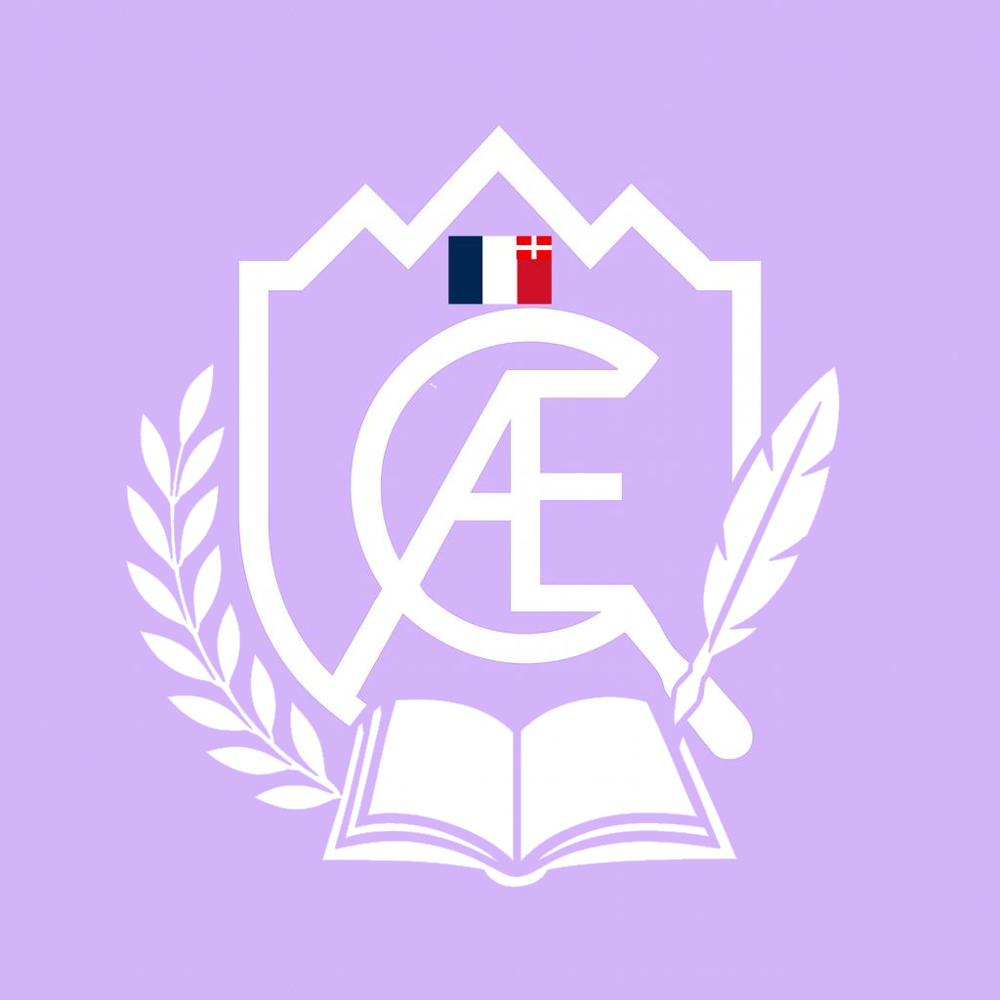

Association Française d'Enquêtes Criminelles
Lundi 09 novembre 2026
COMMUNIQUÉ DU DIRECTEUR
Le Directeur et Conseiller Général déclare,
Que :
Artcile 1 :
Je dépose aujourd'hui une demande au Conseil pour proposer l'organisation d'élections directrices. Cela répond aux objectifs suivants :
- Continuer la démocratisation de l'Association Française d'Enquêtes Criminelles débutée par la Création du Conseil en 2024 et la Création de la fonction de Vice-Conseiller Général en septembre 2026
- Baronne Von Hellman, Conseillère Santé et Culture, Directrice du Bataillon B2
Article 2 :
Le Directeur et Conseiller Général nomme au Conseil Nommé vacant :
- Conseiller Science et Nature - Le Colonel Moutarde, Directeur du Bataillon B1
- Conseillère Culture - la Baronne Von Hellman, Directrice du Bataillon B2
L'Association Française d'Enquêtes Criminelles
- Le Directeur : Professeur Violet
- Le Conseiller Général : Professeur Violet
- Le Conseil nommé :
- Colonel Moutarde (Conseiller Science et Nature)
- Baronne Von Hellman (Conseillère Culture)
- Le Conseil élu :
- Docteur Orchidée
- Monsieur Smith
- Le Secrétaire Général : Baron Bloch
- Le Directeur de la Section A : Sergent Legris
- La Directrice de la Section B : Docteur Orchidée
- Le Directeur de Bataillon A1 : Baron Bloch
- Le Directeur du Bataillon A2 : Vicomte d'Artifroid
- Le Directeur du Bataillon B1 : Colonel Moutarde
- La Directrice du Bataillon B2 : Baronne Von Hellman